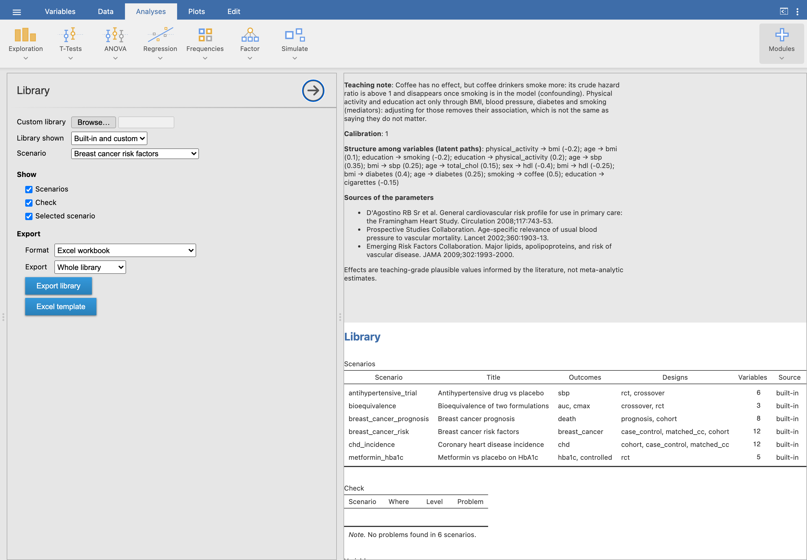

The scenario library
A library is a dictionary of shared variables plus scenarios, one clinical question each. The built-in one is in the module (inst/library/); teachers can write their own in YAML or Excel. The full format is in schema.md.
The Library analysis

- Browse… reads a custom library (
.yaml,.xlsx,.jsonor a.zipof them); Library shown chooses built-in, custom or both. - Scenarios for design lists only the scenarios with an outcome that fits a design.
- Check lists problems in plain language, located by scenario and field.
- Export library writes the library or one scenario as Excel, JSON or zipped YAML; Excel template gives a workbook with a worked example and the format.
- The Simulated study pickers read custom libraries in JSON; export a YAML or Excel library as JSON here to use it there.
A scenario in brief
id: breast_cancer_risk
label: {en: Breast cancer risk factors, es: Factores de riesgo de cáncer de mama}
variables:
age: {from: dictionary, dist: "uniform(35, 75)"}
menarche: {type: continuous, dist: normal(12.6, 1.4), range: [9, 17], round: 0}
menopause:
type: binary
levels: [pre, post]
p: plogis((age - 51) / 1.5) # rule: menopause depends on age
hrt:
type: binary
p: 0.25
levels: [never, ever]
only_if: menopause == "post" # structural value
otherwise: never
structure: # latent paths among variables
- [age, parity, 0.25]
outcomes:
breast_cancer:
type: event
rate: 2.5/1000
designs: [case_control, matched_cc, cohort]
effects:
age: {HR: 1.04, per: 1}
bmi: {HR: 1.12, per: 5, by: {menopause: {pre: 0.93, post: 1.12}}}
null_variables: [education, coffee]
teaching: {en: "Age confounds parity and menopause...", es: "..."}- Variables: continuous (normal, log-normal, gamma, beta, uniform), counts (Poisson, negative binomial), binary, nominal, ordinal and genotypes.
- Structure and correlations among variables, and rules: a probability that depends on other variables, structural values (
only_if/otherwise) and formulas for derived variables. - Outcomes: binary (prevalence), events (rate, risk or median; Weibull shape), continuous (also on the log scale) and counts, each with conditional effects (OR, HR, RR, ratio, beta), effect modification (
by:, centred at the population mean of the variable unlesscenter:says otherwise) and interventions for trials; diagnostic markers with an AUC, acutoff, a dependence on covariates (depends:) or on disease severity (severity_sd). - Translations: labels in several languages, and an
i18n:section with the column names and category labels students see. - A lock: typed in Teacher code before exporting, it locks the exported library; while it is loaded, the answer key, the true values and the effects need the same code (a deterrent: the file itself holds the parameters).